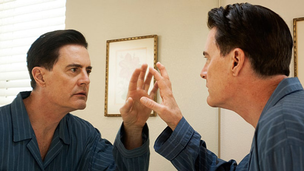

Two back-to-back chapters find David Lynch going as far as he's ever gone – and getting as silly as he's ever gotten.

His name is Dougie Jones. He has a beer gut, a bad haircut, an even worse selection of sportjackets and a penchant for adultery in vacant development housing. And he does not exist.
Dougie is the mystical creation of Agent Dale Cooper's doppelganger – a living, breathing bait-and-switch brought into existence, somehow, to get sucked into the Black Lodge in the evil being's place. So when Coop returns to the real world, it's this poor sap who gets airlifted into the afterlife. The Bad Dale may vomit up poison and get himself arrested, but he's otherwise no worse for the wear. And while the genuine article wanders around in a daze, his opposite number is already trying to scheme his way out of prison by duping his former friends from the FBI.
That's about as straightforward an explanation of the story of this week's back-to-back Twin Peaks as you're likely to muster. But it barely tells the story of these two extraordinary episodes at all. And it certainly doesn't touch on the absolutely unalloyed nightmare world through which we follow Cooper during much of the third installment – a neather-realm of shaking stars, purple oceans that materialize from a liquid cloud and darkened chambers where women in red who communicate cryptically or not at all. That's not even taking into account the apparent destination of the spirit of Major Garland Briggs, Cooper's friend and fellow white wizard (for lack of a better phrase), who shows up as a brief appearance as a literal celestial being. To quote Phillip Jeffries' IRL alter-ego, the stars are out tonight.
It doesn't speak to the comic brilliance of what happens when the amnesiac agent materializes back in the real world in Dougie's place, waddling and muttering his way into untold thousands of dollars of winnings at a local casino, like the world's luckiest and most overgrown toddler. (His repeated cry of "Hell-ooooooooo!" every time he pulls the lever of a slot machine is destined to join the annals of Twin Peaks quotables.) It doesn't convey how good it feels to see Coop's old Bureau friends Gordon Cole, Albert Rosenfield and Denise Bryson alive and well and rewarded for their hard work and humane outlook. It doesn't capture the thrill of seeing Major Briggs' ne'er-do-well son Bobby all grown up and working for the the town's sheriff's department, his father's vision fulfilled.
Most of all, it fails to demonstrate how, despite the otherworldly nature of his surroundings and situation, Cooper remains a deeply decent figure. Actor Kyle MacLachlan and co-creators Mark Frost and David Lynch carefully convey our hero's concern and love for other people – even when it's not clear they're people at all – throughout both episodes. When the eyeless woman he encounters in that stranded satellite in the afterworld is whisked off into space, the agent's deep-rooted desire to help her is written all over his face. When he returns to the real world without his memories, he instinctively helps the poor old woman at the casino who asks for his aid in picking the right slot machines to play. When he returns to "his" home, he gives his winnings to his enraged-then-ecstatic wife Janey-E (so now we know what part Naomi Watts is playing), then smiles and gives a thumbs-up to "his" kid, Sonny Jim. After witnessing the dehumanizing horrors of the Black Lodge and the inhumane acts of the Coop-elganger, it's a huge relief to see how much of our good-hearted white knight still exists inside the man he's become.
The human touch can be felt throughout these installments, particularly in the second half of this two-parter. Here, we're treated to multiple comic-relief scenes involving Deputy Andy, his wife Lucy, and Sheriff Frank Truman (Robert Forster), the brother of the original series' Harry S. The plain-spoken older man abides as the precinct's reliably daffy receptionist reels from the the shock of seeing him in person while still on the phone with him (cellular technology is apparently her kryptonite). He also tries to help the couple stay focused as they work with Hawk to discover what's missing from the files on Agent Cooper (no, it's not the chocolate bunny Lucy ate to help with her gas), and patiently endures an enormously pretentious speech from their son Wally Brando (Arrested Development's Michael Cera). True to his namesake, their offspring apparently lives his life like an absurd Marlon Brando tribute act, talking like The Godfather and riding around in a leather jacket and sailor cap on a motorcycle like The Wild One. It's as ludicrous as anything the series has ever done, from the fish in the percolator to the pine weasel (don't ask), and after the cosmic horror of the previous episode it's an absolute joy to experience.
The Wally Brando scene teaches us something else about Twin Peaks 3.0. With four hours of the The Return under our belts, it's getting a bit easier to understand its overall approach. Is it leaning hard on all of the original's most esoteric and terrifying material? Yes. Is it still the kind of FBI/cop show that serves as the missing link between Hill Street Blues and The X-Files? Also yes. Is it going to make time for ridiculous comedy detours just like it did 25 years ago? Again, yes. Will it serve up the love and loss of soap opera and melodrama, with the emotional volume cranked so high that it could read as parody? Once more, yes. It's just going to do all those things slowly, parceling them out a little bit at a time over the course of multiple hours, instead of whipsawing back and forth in every single outing. The comedy of part four, for example, provides a counterbalance for the black psychedelia of part three; you need to see both, however, to strike the balance.
In other words, as suspect as this kind of description has become in TV-watching circles, the new Twin Peaks really is an 18-hour movie. If you've ever seen Lynch's epic-length Inland Empire, which is three full hours of his most experimental narrative work since Eraserhead, it's not hard to imagine the director chomping at the bit for the chance to explore obsessions over an even larger canvas. For television this gutsy and this good, he can take all the time he needs.